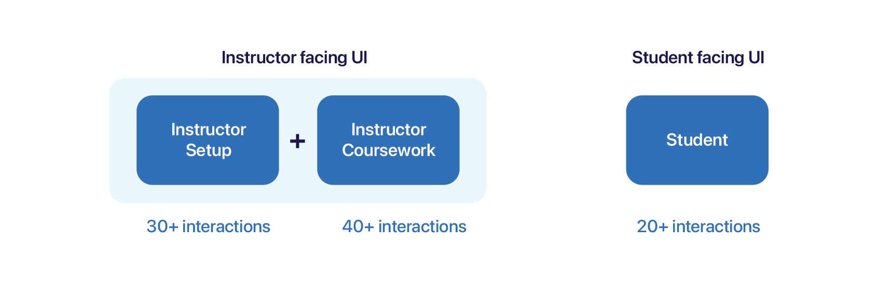
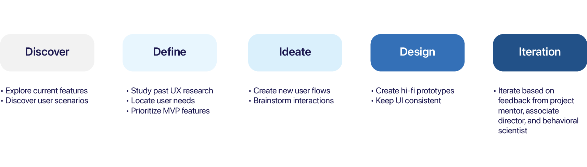
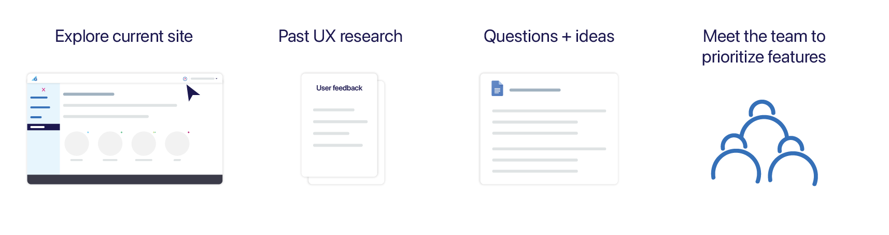
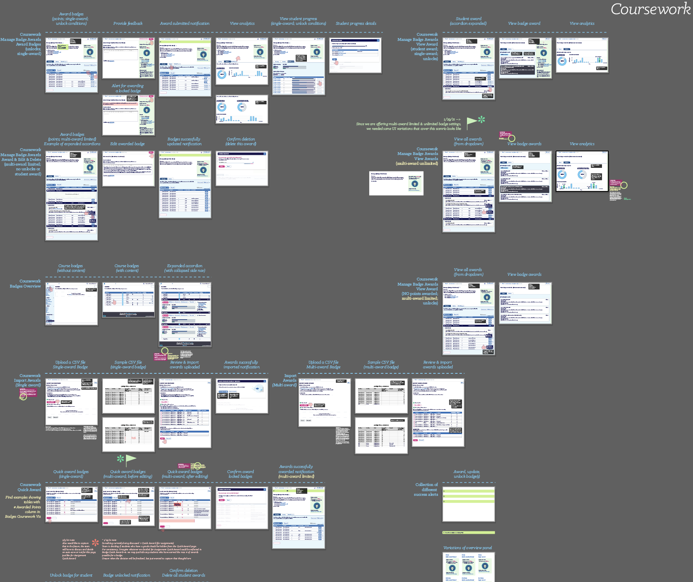
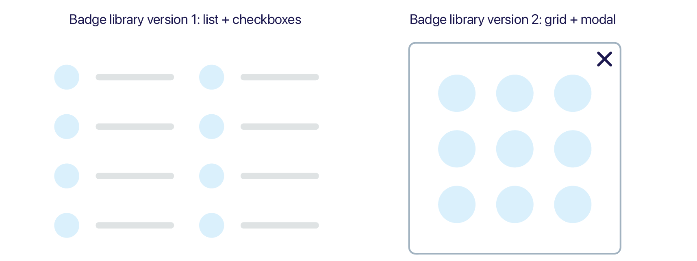
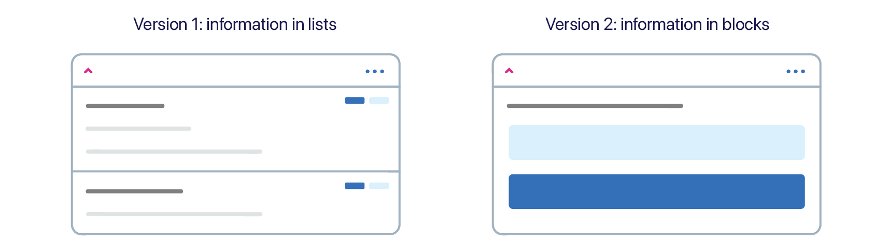
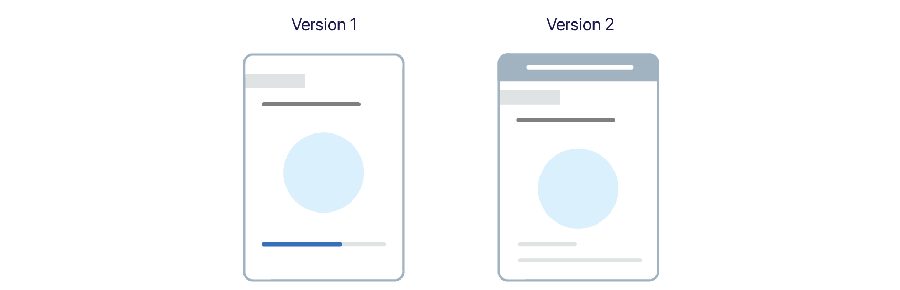
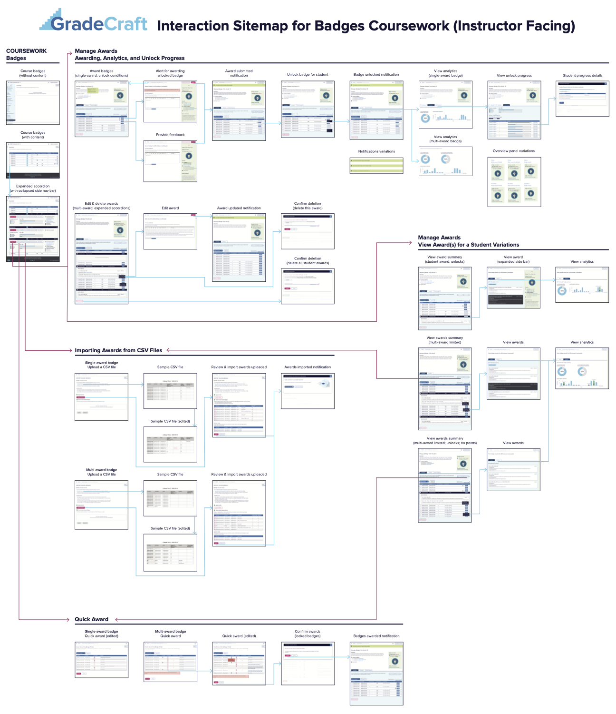

Redesigning the badges features for a gameful learning management system
* The platform is currently under process of rebrand and redesign. Spire would be its new name.
* The platform is currently under process of rebrand and redesign. Spire would be its new name.
GradeCraft is a learning management system that builds upon gameful pedagogy. It is a highly customizable platform that helps instructors design engaging courses and encourages learners to enjoy the process of learning without being afraid of failing.
Starting from Summer 2020, I have been working on redesigning the badges feature with my mentor. Over 6 months, the design had gone through more than 15 iterations and is now handed off to the development team.
UX design fellow from July 2020 - Feb 2021
Associate director, UX desiger, and behavioral scientist
Internship @ Center for Academic Innovation, UM
In this project, I redesigned both the instructor facing and student facing badges features. And that includes more than 70 interactions on the instructors’ side and around 20 interactions on the student side.
Project scope
I started with exploring stakeholder needs, defining design goals, and then moved on to brainstorm possible solutions. With that, I worked on the designs, presented that to my mentor and the project director, and iterated the design based on their feedback.
After around 15 rounds of iterations, I then brought the design to our behavioral scientist to work on the language in the mockups together.
Project journey
Before digging into redesigning GradeCraft Badges, I poked through the current site and pulled up the interaction sitemap made by our user researchers to better understand how it works.
Thinking in isolation does not help. I reached out to my mentor Sophia and met our associate director Cait with a list of questions related to current features and ideas to improve user experience. From the talks, I was able to locate user needs and prioritize features.
Discover opportunities and define goals
Now that I have located user needs and prioritized MVP features, it’s time to transform information gathered into new user flows for the redesigned version of GradeCraft Badges.
The following are 3 design goals for Badges Redesign. I started off with creating potential new user flows with notes scattered on Illustrator to keep a record of new, but sometimes wild, ideas.
Keep features users can interact with on current site
Create new designs based on user requests and past UX research results
Align badge redesign styles and logic with other parts of redesigns
Having these 3 goals in mind, I built new user flows with a clear idea of how it should look like. And with that, I moved on to flesh out the high fidelity prototypes.
This might not sound like a typical design process, but because we already have a very solid design guideline and some pieces of the redesigns were already done and gone through usability tests to test out the basic layout and functionality, to save time in the development cycle, the workflow has been adjusted accordingly.
Redesigned mockups closely following design guidelines
From weekly design work reviews with my mentor, I learnt best practices in naming Illustrator artboards and layers to help another designer understand the logic behind different interactions.
From 3+ rounds of redesign meetings with our associate director, I gained experience presenting design work to a non-designer and got inspiration from different points of view.
And finally, from 2+ meetings with behavioral scientist Holly, I realized the power of language and how it helps the UI shine.
Below listed 3 of the many design decisions I have made with my mentor.
In the GradeCraft redesign, the team wanted to introduce a new badge library feature to users. In the first version, badges were ordered in lists under the General Info tab. Because of the limited space, badge icons were not as visible. Thus, after discussing with my mentor, we decided to enlarge the icons and move them to a modal. The new interaction requires one additional click, but has a greater potential to nudge users to try out our new badge icon collection.
1st design change
List of badge award summaries in expanded accordions worked well when there are only a few awards to a student. However, a student can possibly earn a badge several times. In that scenario, the expanded accordion will become overcrowded and less visible. Based on the finding, my mentor and I agreed on displaying the information in blocks and keeping the buttons under the dot UI.
2nd design change
In the current badge details page, there are no overview panels. All information is listed on the page. The green panel in version 1 provides a quick and focused overview of a student’s progress towards the goal. However, after presenting the mockups with the project director, we decided not to include the entire idea of “in progress” in Badges. From that, I worked with my mentor to create a more simplified version of the overview panel.
3rd design change
Even though we’ve only touched on 3 design changes in this project, here, I would still like to share with you how the final design looks like. After the high fidelity mockups were approved by the project director, I created 3 interaction sitemaps accordingly and here’s one of those.
Interaction sitemap with redesigned user experience
Throughout this process, I learned to always be prepared to walk the team through design mockups. Depending on who the listeners are, it is always a great idea to adjust what to present and how to present the prototypes.
Chances are that when we revisit the mockups several months later, we all forget why the decisions were made and how we came to that conclusion. And this is when detailed documentation steps in to solve the mystery.
And finally, there’s no such thing as a final version. In the world of developing for digital experiences, we don’t release and forget. We should instead, release and renew along the way.